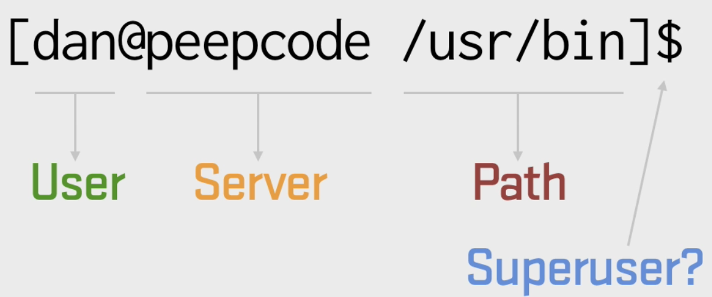
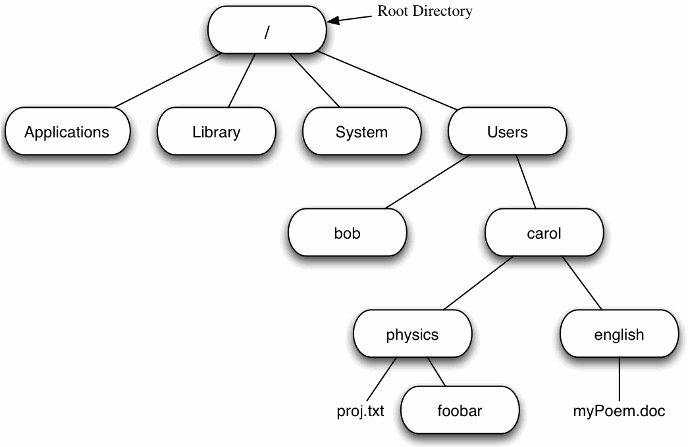
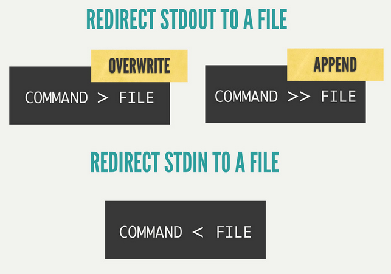
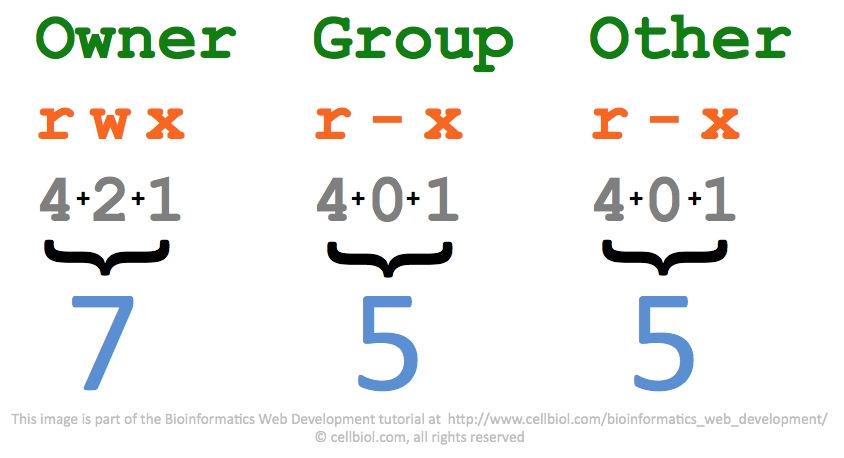

Today's Agenda
- Basic Commands
- Understanding $_
- Unix file structure
- | > >> < `
- Some advanced must know
- Simple IQs of shell
Quick Dive Into Commands
Basics
print current user id(name)
whoamiremove recursively and forcefully everything inside /tmp/logs
rm -rf /tmp/logsmake script executable
chmod +x myscript.shchanging the file ownership
sudo chown username:group file_to_ownget process information
ps aux | grep sidekiq
More than basics
$ ssh deploy@cloudfactory.machine -v
$ scp -P 1234 -v output.csv root@192.168.1.1:/tmp/csvfiles/
Understanding prompt

Figure 1: basic unix prompt
Unix File Structure

Figure 2: unix file system
In ubuntu: /home/username is home for user
pipes | , <redirection>>, ticks`
Pipes: [command1] | [command2]
output from command1 is input to command2
# check if sidekiq is running
ps aux | grep sidekiq
Redirection: [somescript] > outputfile
date > /tmp/date

Figure 3: redirection out: '>' overwrite, '>>' append & '<' redirect in
Ticks: [somescript] `[otherscirpt]` otherscript is executed before hand (first) and then somescirpt uses that.
ls -la `which python`
Some useful stuffs
- Everthings is a file
- CAsESeNSitiVE
- No output means Success
- Getting helps
Case Sensitive
must remember this one
$ rm -rf myData.txt
$ rm -rf MyData.txt
$ rm -rf mydata.txt
Everythings is a file
- documents, folders,
- hardwares: hard-drive,
- io devices: keyboard, printer
- network communication: network-socketsl
Understanding permission

Figure 4: file permission on linux(unix)

Figure 5: file permission described
Unix is terse
- Generally no output after command indicates everythings gone ok;
- else errors
Testing
- I will grow.
- I will shrink.
- I rolled in 2nd.
- I will fade out frist.
- I don't fragment
Getting Tools Installed
MacOS: brew [install] [packagename] :like
{kind=link}
Ubuntu: apt-get install [packagename]
Getting Help | try both | is inconsistent
[command] --help || [command] -h
Eg; cap --help
OR try:
man [command]
command [help]
QA